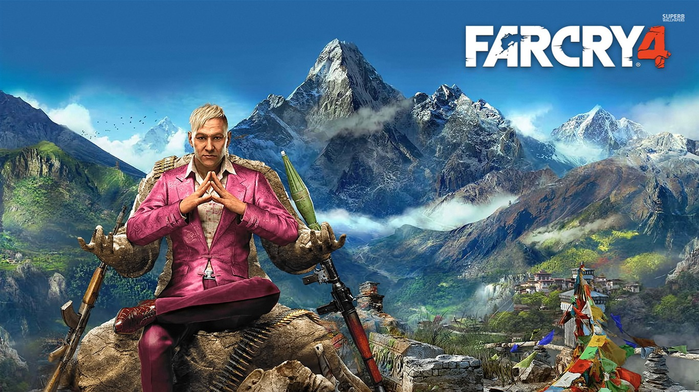

O protagonista é Ajay Ghale, um jovem nativo de Kyrat que retorna à sua terra natal para cumprir o último desejo de sua falecida mãe: levar as cinzas até uma região sagrada para a execução de um ritual. Ghale não esperava uma recepção tão calorosa, literalmente.
"
curiosidades
Far Cry 4 conta com um final alternativo, que pode ser desbloqueado logo nos primeiros minutos. Para isso, basta não tentar escapar da mansão do vilão Pagan Min. Isso alternará o destino do personagem, que poderá voltar para a casa a salvo.